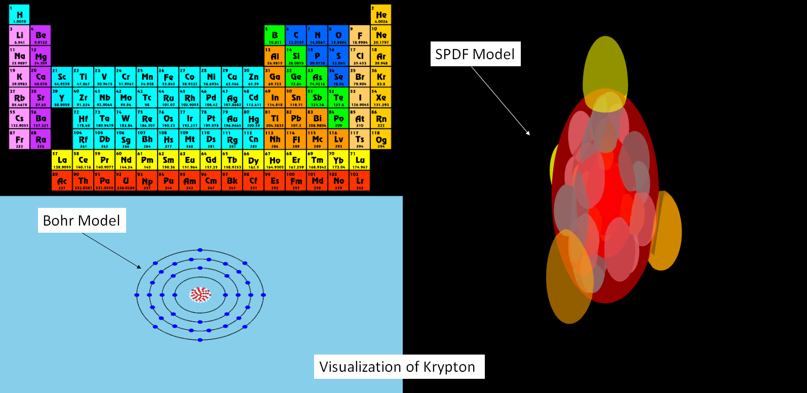
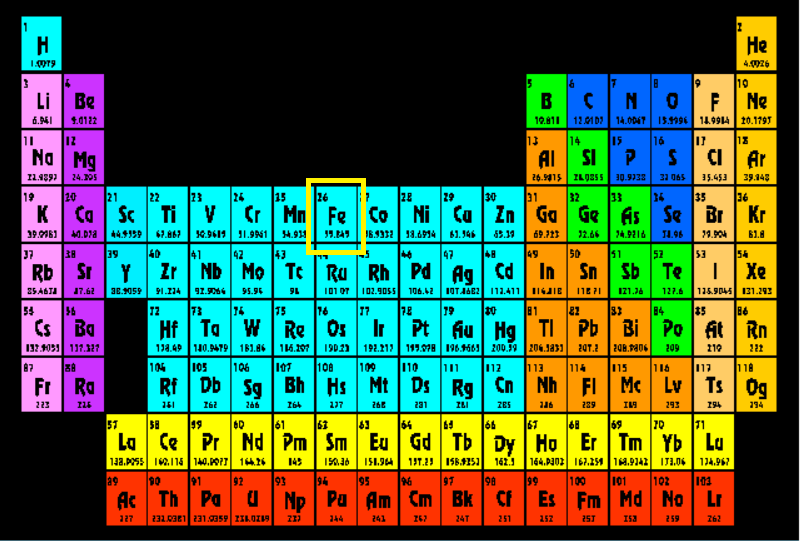
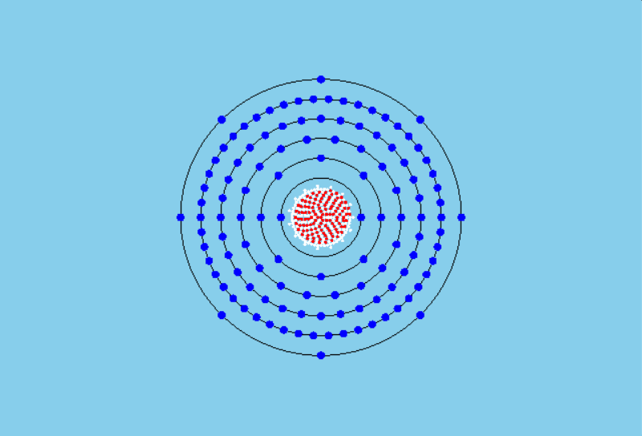
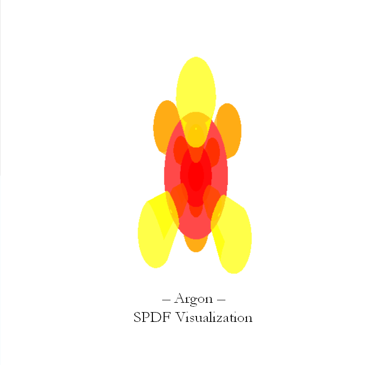

Ch.E.M.I.C.
Chemical Element Models Interactive Construct
Ch.E.M.I.C. is an interactive educational resource for 2-D and 3-D visualization of atomic elements from the periodic table. This web application is currently in development and is in ALPHA release at this time. Updates are being made almost daily so be sure to come back and checkout the progress.
The web application is written completely in javascript and WebGL using three.js library.How to Use Ch.E.M.I.C.
To launch the application click on the tile below. There is a lot of data to be processed so depending on connection speed and hardware it may take a few moments to load.
v.0.2.1.4.05.17
Controls
Controls enabled for desktop and mobile devices, however the are only the 3-D SPDF Model Viewport.rotate: left mouse / 1 finger | zoom: mouse wheel / 2 fingers (squeeze or stretch) | pan: right mouse / 3 fingers
Viewports
The visualization presents 3 distinct view ports, a periodic table viewport, a Bohr model viewport, and the SPDF model viewport. As you can see the periodic table viewport shows the periodic table of elements including their atomic number, symbol, and mass. The Bohr model is the 2-D representation of the atomic structure, including nuclues (neutrons and protons) and electron shells. This model is conceptual to help illustrate the composition of an atoms electrons around its nucleus. Finally the SPDF model (named as such for the orbital types of atomic structures, those being S, P, D, and F) represents the 3-D composition of the atomic structure notionally indicating the probability of an electron appearing in 3-D space around the nucleus. Again, this is notional, and encourage you the user to research more information on SPDF models.

Selection
Selecting an element from the periodic table is accomplished by clicking on an element tile in the periodic table. Clearing the selection is achieve by clicking anywhere in the periodic table viewport that is blank - i.e. anywhere on the background. All constructs are assumed to be non-ionic stable representations of the selected element.



Updates
- v.0.2.1.4.05.17: Reset camera on selection so that SPDF model is completely within FOV.
- v.0.2.0.4.05.17: Cleanup of models when change in selection occurs. All SPDF orbitals created in proper sequence for all elements.
- v.0.1.3.4.03.17: Corrected creations of SPDF orbitals to fill in proper sequence up to and including period 5.
- v.0.1.2.3.30.17: Changed SPDF Models background for better contrast and turned on antialiasing.
- v.0.1.1.3.30.17: Update to SPDF Models for all elements up to and including period 4.
- v.0.1.0.3.29.17: Initial Release. Selection, Periodic Table, all Bohr Models, and SPDF Models for all elements up to and including period 3.